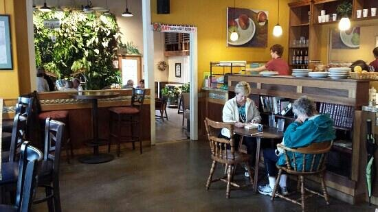

Catering
Singer Hill is a unique venue for social gatherings and business meetings! Our café is available for your next event any evening after 6:00 pm. Need more space? Consider the seasonal Singer Hill Art Garden, which features vertical gardens and outdoor seating!

Comes with either Chips and Pickle or our signature Sesame Slaw
Pastrami, sauerkraut, thousand island dressing and Swiss cheese grilled to perfection on marbled rye bread
Turkey, Bacon, light mayo and provolone cheese grilled on tasty multi-grain bread.
Albacore tuna salad & melted Tillamook cheddar grilled on multi-grain bread. The ultimate comfort food.
Ham, Swiss cheese, and Marion berry Jam on classic white bread. a sweet & savory delight!
Tomatoes, spinach, provolone cheese & our pesto mayo all grilled on rustic bread
Sliced ham, havarti cheese, sliced fresh pear, light mayo, all perfectly grilled on multi-grain bread.
Tillamook cheddar cheese grilled to absolute perfection on classic white bread
Substitute Morningstar Veggie Patty
Comes with either Chips and Pickle or our signature Sesame Slaw
Turkey, Swiss cheese, lettuce & tomato, spread with cream cheese, and all wrapped in a spinach tortilla. Add Bacon option
A classic! Bacon, lettuce, tomato, and light mayo on lightly toasted white bread
Diced chicken breast, celery, almonds, green onion & diced apples with lettuce and tomato on Dave’s Killer Bread
Albacore tuna, celery, onion & pickle with lettuce and tomato on Dave’s Killer Bread
Turkey, cream cheese, lettuce and cranberry dressing on rustic bread
Turkey, provolone cheese, lettuce and tomato on Dave’s Killer Bread
Seasonal veggies on Dave’s bread with your choice of cream cheese or hummus.
Comes with saltines
Made in the Singer Hill kitchen each day.
Delicious spicy chili. Vegan and gluten free.
A side salad & a cup of soup, served with toasted rustic bread or oyster crackers
Hummus served with toasted rustic bread, Sesame chips & seasonal veggies
Sliced chicken breast, toasted almonds, mandarin oranges, crunchy chow-mein noodles & sesame ginger dressing
Baby spinach, gorgonzola, candied walnuts, seasonal fruit, and red onions. Served with poppy-seed dressing
Romaine tossed with parmesan cheese, Caesar dressing, & house-made croutons Add Chicken option
Your choice of tuna or chicken salad (or mix both) atop a bed of mixed greens. Served with your choice of dressing
Mixed greens, cucumber, tomato, red onion & topped with croutons. Served with your choice of dressing
Green and red cabbage, green onion, sesame seeds & toasted almonds Tossed with sesame dressing
A side salad & a cup of soup, served with toasted rustic bread or oyster crackers
Bagles by Portland Bagel Co.
Our quiches are made entirely from scratch & include a side of seasonal fruit
Scrambled egg (or egg whites), Swiss cheese, spinach, tomato, and thinly sliced bell peppers on a toasted bagel
(the “OC Special” on a Bagel) Scrambled eggs, Tillamook cheddar, and your choice of bacon, ham or sausage, all on a toasted bagel
Ham, sausage, and bacon with scrambled eggs & melted Tillamook cheddar, all tucked into a toasted bagel
An all butter croissant served with scrambled eggs, Tillamook cheddar, and your choice of bacon, ham or sausage
Hot, fresh waffles with butter and Syrup.. These make the place smell amazing! Add Chocolate Chips — 0.50 Add Nutella and Bananas — 1.00
Piping hot steel cut oats served with sides of milk (dairy or non-dairy), brown sugar, & raisins
Low-fat vanilla yogurt topped with Berries and raisin almond Granola
A beautiful variety of delicious fruits served in a boat dish
Substitute Morningstar Veggie Patty
We cook some pastries here, and order in the rest from Marsee Bakery
Cookies
Cinnamon Rolls
Scones and Bars
Gluten-free Brownies
Gluten-free Macaroons
Coffee Cake
Muffins
Turnovers
Bread Pudding
Key Lime Tart
Cup Cakes
Chocolate Mousse
Croissant (Plain)
Almond Croissant
Chocolate Croissant
Marionberry Danish
Palmier Cookie
Strudel Stick
Biscotti
Gluten Free Pastries
Brownies
Macaroons
Chocolate Mouse
Coffee, Espresso & More
We only serve Stumptown Coffee
Drip Coffee
Extra Espresso Shots
Soy Milk or Half & Half
Latte Hot or Iced
Mocha Hot or Iced
White Choc. Mocha
Cappuccino
Espresso
Americano
Iced Tea
Chai Latte Hot or Iced
Stash Hot Tea
Loose-Leaf Hot Tea
Cream Soda
Flavored Soda
Italian Soda
Can of Soda
Hot Chocolate
Juice
Hot Cider
Smoothie
Milk
Flavored Milk
Assorted Bottled Beer
Glass of House Red or White Wine
Locally produced wine
Brownies
Macaroons
Chocolate Mouse
Low-fat vanilla yogurt topped with Berries and nuts.
Made in the Singer Hill kitchen each day.
Delicious spicy chili. Vegan and gluten free.
Piping hot steel cut oats served with sides of milk (dairy or non-dairy), brown sugar, & raisins
A beautiful variety of delicious fruits served in a boat dish
Substitute Gluten-free Tortilla for Bread option
Served with chips or applesauce
Peanut butter and marionberry jam on multi-grain bread.